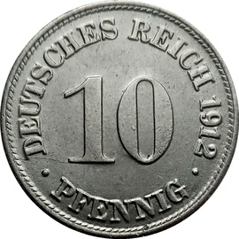

Germany
Germany first issued coins in 1873 after German unification. Between 1873 and 1922,
8 denominations were issued: 1, 2, 5, 10, 20 and 50 pfennigs, and 1 mark. There are over
1,200 unique issues in this series, ranging in value from a few cents to tens of thousands
This web page will document some key dates from eah denomination.
 1 Pfennig
1 Pfennig
The 1 Pfennig was the smallest denomination issued by the German Empire and was equal
to 1/100th of a Mark. It was made of copper and is most similar in size to a US dime.
Listed below are some key dates and their values.
| Date | Mint | Price in F | Notes |
|---|---|---|---|
| 1902 | J | $475.00 | N/A |
| 1877 | B | $350.00 | N/A |
| 1873 | B | $300.00 | N/A |
| 1873 | D | $300.00 | N/A |
| 1873 | A | $215.00 | N/A |
| 1877 | A | $90.00 | N/A |
| 1891 | G | $85.00 | N/A |
| 1886 | G | $65.00 | N/A |
| 1885 | E | $50.00 | N/A |
| 1876 | J | $50.00 | N/A |
| 1891 | J | $40.00 | N/A |
| 1891 | E | $40.00 | N/A |
| 1874 | H | $30.00 | N/A |
| 1893 | G | $30.00 | N/A |
| 1887 | E | $9,000 | Large dot after "Pfennig" |
 10 Pfennig
The 10 Pfennig was the most issued denomination issued by the German Empire and was equal
to 1/10th of a Mark. It's metal content was copper-nickel and is similar in size to a US nickel.
Listed below are some key dates and their values.
| Date | Mint | Price in F | Notes |
|---|---|---|---|
| 1892 | J | $3,000.00 | N/A |
| 1916 | N/A | $180.00 | Iron, beaded |
| 1873 | H | $125.00 | N/A |
| 1917 | N/A | $90.00 | Zinc, Beaded |
| 1917 | A | $90.00 | Zinc, Beaded |
| 1922 | N/A | $40.00 | Iron, beaded |
| 1915 | G | $30.00 | N/A |
| 1873 | G | $25.00 | N/A |
| 1873 | F | $25.00 | N/A |
| 1876 | H | $17.50 | N/A |
| 1873 | B | $17.50 | N/A |
| 1873 | C | $15.00 | N/A |
| 1875 | H | $12.50 | N/A |
| 1874 | H | $12.50 | N/A |
Important note: from 1916-1922 the German Empire issued it's 10 Pfennig coins in both iron and zinc.
The easiest way to tell which is which is to put a magnet up to the coin, iron will stick, zinc will
not. In addition to the different metals used in this time period, some obverses
(face of the coin with the eagle) had beading on the edges.
Below is an image of the beaded border variant.